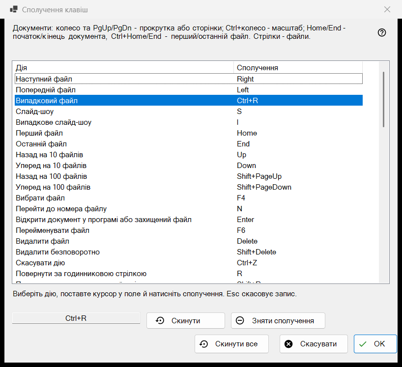
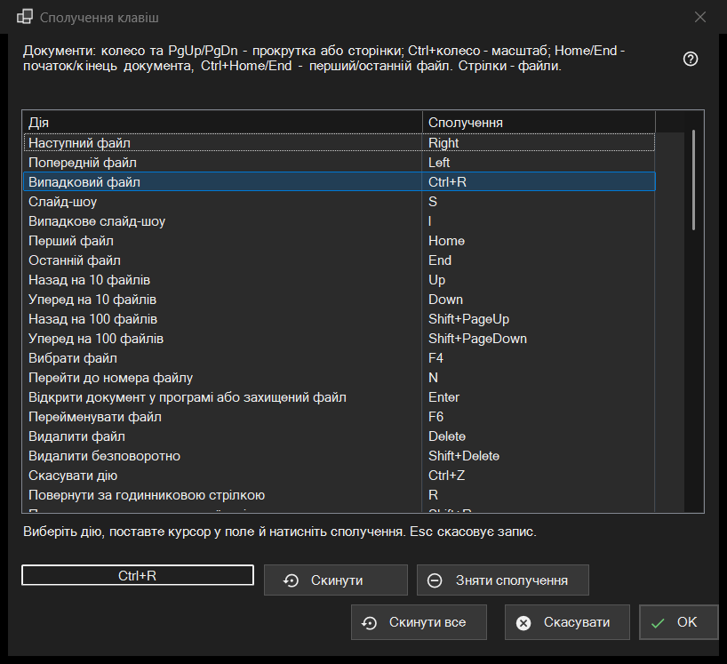

Сполучення клавіш
Призначення
Список усіх дій переглядача, клавіші яких можна змінити, зі сполученням, на яке дія відповідає зараз. Вікно відкривається з «Налаштувань», сторінка «Файли та система», кнопкою «Налаштувати..» у рядку «Сполучення клавіш». Вікно редагує копію: у профіль нічого не потрапляє, доки ви не натиснете «OK».


Порядок дій
- Відкрийте «Налаштування», сторінку «Файли та система», і натисніть «Налаштувати..» у рядку «Сполучення клавіш».
- Виберіть дію в списку.
- Клацніть у полі під списком і натисніть нове сполучення.
- Якщо його вже посідає інша дія, виберіть «Обміняти сполучення», «Зняти в тієї дії» або «Скасувати».
- Повторіть для інших дій; за потреби користуйтеся «Скинути», «Зняти сполучення» або «Скинути все».
- Натисніть «OK», щоб зберегти зміни, або «Скасувати», щоб відкинути їх усі.
Елементи вікна
Список «Дія» і «Сполучення»
Кожен рядок - одна дія та її основне сполучення; у дії без клавіші написано «Не призначено». Десять слотів тек показано як «Перемістити до теки 1..0» і «Копіювати до теки 1..0» (цифра переміщує, Shift і цифра верхнього ряду копіює). Деякі дії відповідають і на додаткові заводські клавіші (на «Наступний файл» реагують ще Пробіл і PageDown). У списку видно лише основне сполучення, але щойно ви призначаєте дії нове, усі її колишні заводські клавіші перестають працювати. Текст над списком перелічує незмінні клавіші для документів (колесо, PgUp/PgDn, Home/End, стрілки), яких у списку немає.
Запис сполучення
Виберіть рядок, потім клацніть у полі під списком (або двічі клацніть по рядку) і натисніть клавіші, за бажанням разом із Ctrl, Shift чи Alt. Поле записує сполучення цілком, сама клавіша-модифікатор сполученням не вважається. Esc виводить із поля, нічого не записуючи. Зміна одразу видна в списку, але поки що вона лише в робочій копії.
Клавіші, які призначити не можна
F1, F10, F11, Esc, клавіші Windows, клавіша Menu, Alt+Tab, Alt+F4 і Ctrl+Alt+Delete належать Windows або самій програмі. Після натискання такої клавіші з’являється повідомлення: «Це сполучення зарезервоване системою або програмою і не може бути призначене.» Нічого не змінюється.
Сполучення вже зайняте
Питання називає власника: сполучення X уже призначене іншій дії, і показано її назву. «Обміняти сполучення» віддає тій дії сполучення, яке було в поточної (можливо, порожнє). «Зняти в тієї дії» залишає її з позначкою «Не призначено», а сполучення дістається вам. «Скасувати» нічого не змінює.
«Скинути», «Зняти сполучення» і «Скинути все»
«Скинути» повертає вибраній дії заводську клавішу. «Зняти сполучення» залишає дію зовсім без клавіші, і заводська клавіша теж перестає працювати; так клавішу можна вимкнути. «Скинути все» питає: «Повернути всі сполучення до типових значень?» Кнопка «Повернути до типових» стирає всі ваші зміни у вікні, «Скасувати» їх зберігає.
«OK» і «Скасувати»
«OK» зберігає всю карту клавіш у профіль, і переглядач одразу нею користується. «Скасувати» закриває вікно й лишає профіль точно таким, яким він був. Клавіші відео та звуку (пауза, звук, гучність, перемотування, темп відтворення, кадр за кадром, доріжки) діють на файл, що відтворюється.